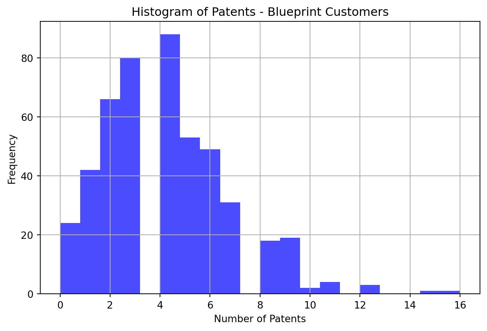
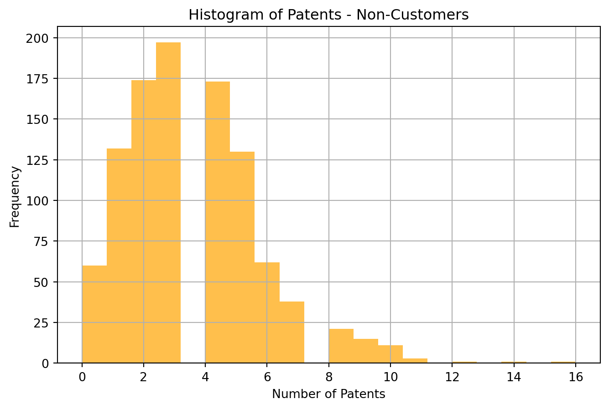
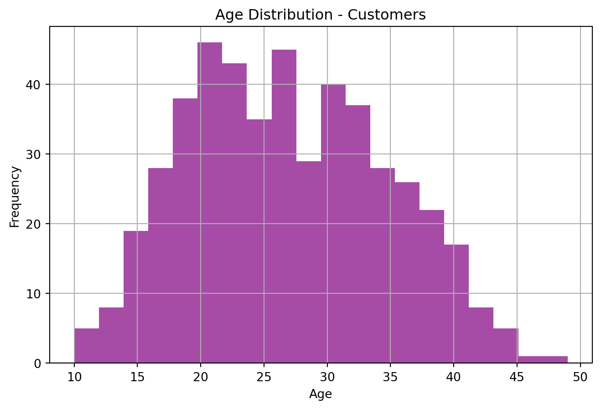
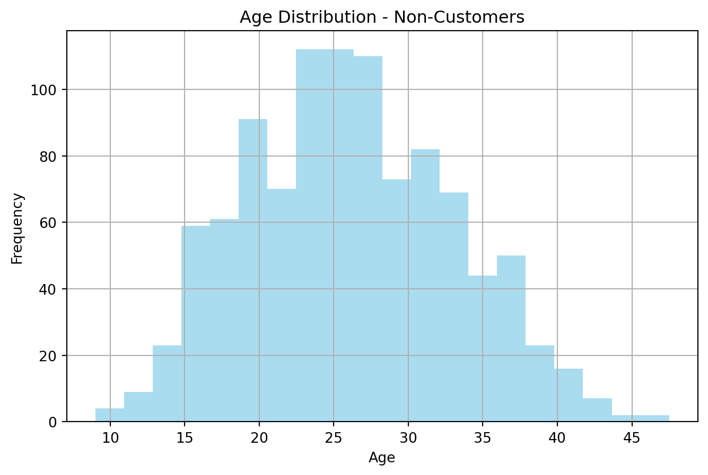
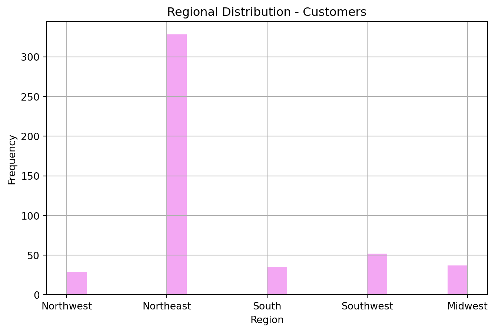
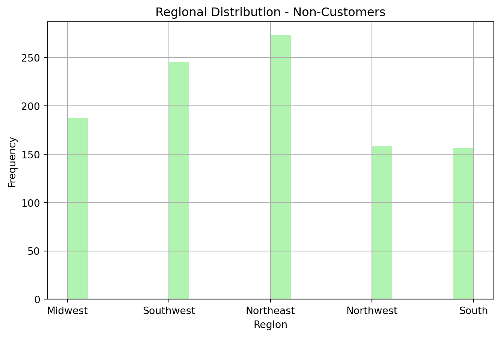
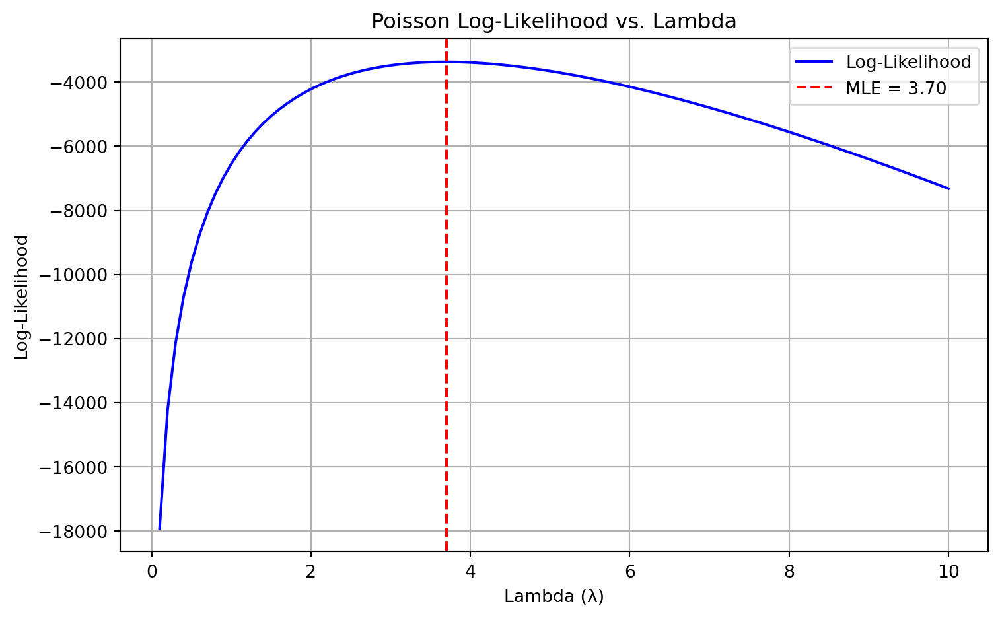
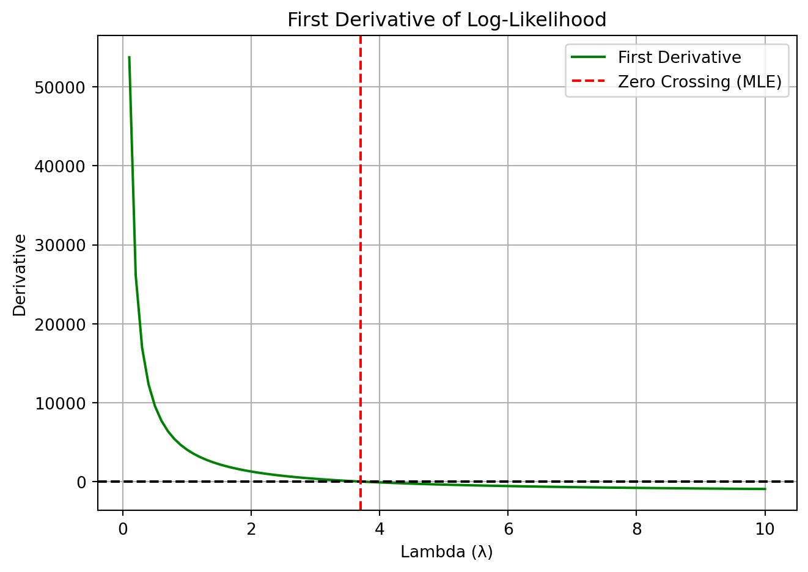

import pandas as pd
import matplotlib.pyplot as plt
blueprint = pd.read_csv('blueprinty.csv')
blueprint.head()| patents | region | age | iscustomer | |
|---|---|---|---|---|
| 0 | 0 | Midwest | 32.5 | 0 |
| 1 | 3 | Southwest | 37.5 | 0 |
| 2 | 4 | Northwest | 27.0 | 1 |
| 3 | 3 | Northeast | 24.5 | 0 |
| 4 | 3 | Southwest | 37.0 | 0 |
Komal Nagaraj Kattigenahally
May 7, 2025
Blueprinty is a small firm that makes software for developing blueprints specifically for submitting patent applications to the US patent office. Their marketing team would like to make the claim that patent applicants using Blueprinty’s software are more successful in getting their patent applications approved. Ideal data to study such an effect might include the success rate of patent applications before using Blueprinty’s software and after using it. Unfortunately, such data is not available.
However, Blueprinty has collected data on 1,500 mature (non-startup) engineering firms. The data include each firm’s number of patents awarded over the last 5 years, regional location, age since incorporation, and whether or not the firm uses Blueprinty’s software. The marketing team would like to use this data to make the claim that firms using Blueprinty’s software are more successful in getting their patent applications approved.
Let’s read the data for Blueprinty’s
import pandas as pd
import matplotlib.pyplot as plt
blueprint = pd.read_csv('blueprinty.csv')
blueprint.head()| patents | region | age | iscustomer | |
|---|---|---|---|---|
| 0 | 0 | Midwest | 32.5 | 0 |
| 1 | 3 | Southwest | 37.5 | 0 |
| 2 | 4 | Northwest | 27.0 | 1 |
| 3 | 3 | Northeast | 24.5 | 0 |
| 4 | 3 | Southwest | 37.0 | 0 |
mean_iscust = blueprint[blueprint['iscustomer'] == 1]['patents'].mean()
mean_isnot_cust = blueprint[blueprint['iscustomer'] == 0]['patents'].mean()
print("Mean number of patents for Blueprinty's customers: ", round(mean_iscust, 3))
print("Mean number of patents of non-Blueprinty's customers: ", round(mean_isnot_cust, 2))
# Histogram of number of patents for Blueprinty customers
plt.figure(figsize=(8, 5))
plt.hist(blueprint[blueprint['iscustomer'] == 1]['patents'], bins=20, color='blue', alpha=0.7)
plt.xlabel('Number of Patents')
plt.ylabel('Frequency')
plt.title('Histogram of Patents - Blueprint Customers')
plt.grid(True)
plt.show()
# Histogram of number of patents for non-customers
plt.figure(figsize=(8, 5))
plt.hist(blueprint[blueprint['iscustomer'] == 0]['patents'], bins=20, color='orange', alpha=0.7)
plt.xlabel('Number of Patents')
plt.ylabel('Frequency')
plt.title("Histogram of Patents - Non-Customers")
plt.grid(True)
plt.show()Mean number of patents for Blueprinty's customers: 4.133
Mean number of patents of non-Blueprinty's customers: 3.47

From the above histograms of number of patents by customer status it is observed that, for non customers the highest number of patents are around 2-3 and for Blueprinty’s customers it is around 4-5. The mean number of patents for Blueprinty’s customers is 4.133 and for non customters it is 3.47. A larger proportion of Blueprinty’s customers have large number of patents (8-16) as compared to that of non-customers.
Blueprinty customers are not selected at random. It may be important to account for systematic differences in the age and regional location of customers vs non-customers.
Let’s vizualize the age distribution of customers vs non-customers
# Plot for customers
plt.figure(figsize=(8, 5))
plt.hist(blueprint[blueprint['iscustomer'] == 1]['age'], bins=20, color='purple', alpha=0.7)
plt.xlabel('Age')
plt.ylabel('Frequency')
plt.title('Age Distribution - Customers')
plt.grid(True)
plt.show()
# Plot for non-customers
plt.figure(figsize=(8, 5))
plt.hist(blueprint[blueprint['iscustomer'] == 0]['age'], bins=20, color='skyblue', alpha=0.7)
plt.xlabel('Age')
plt.ylabel('Frequency')
plt.title('Age Distribution - Non-Customers')
plt.grid(True)
plt.show()

From the above age distributions of Blueprinty’s current customers it is seen that -
The non-customer age distribution suggests the following -
Let’s visualize the distribution by region for customers vs non-customers
# Visualize regional distribution by customer status
# Histogram for customers
plt.figure(figsize=(8, 5))
customer_regions = blueprint[blueprint['iscustomer'] == 1]['region']
plt.hist(customer_regions, bins=20, color='violet', alpha=0.7)
plt.xlabel('Region')
plt.ylabel('Frequency')
plt.title('Regional Distribution - Customers')
plt.grid(True)
plt.show()
# Histogram for non-customers
plt.figure(figsize=(8, 5))
non_customer_regions = blueprint[blueprint['iscustomer'] == 0]['region']
plt.hist(non_customer_regions, bins=20, color='lightgreen', alpha=0.7)
plt.xlabel('Region')
plt.ylabel('Frequency')
plt.title('Regional Distribution - Non-Customers')
plt.grid(True)
plt.show()

For the Customers of Blueprinty:
For Non-Customers: - The distribution is much more balanced distribution across all regions. - Northeast, Southwest, Midwest lead, each with ~250–270. - Northwest and South are slightly lower, but still significant (~150+).
Since our outcome variable of interest can only be small integer values per a set unit of time, we can use a Poisson density to model the number of patents awarded to each engineering firm over the last 5 years. We start by estimating a simple Poisson model via Maximum Likelihood.
Mathematically the likelihood for_ \(Y \sim \text{Poisson}(\lambda)\)
The likelihood function for the entire sample is:
\[ \mathcal{L}(\lambda) = \prod_{i=1}^{n} \frac{e^{-\lambda} \lambda^{Y_i}}{Y_i!} \]
And the log-likelihood function is:
\[ \log \mathcal{L}(\lambda) = -n\lambda + \left( \sum_{i=1}^{n} Y_i \right) \log \lambda - \sum_{i=1}^{n} \log Y_i! \]
Now we will use Python to estimate the log likelihood function. Code below :
Next, we will plot the Poisson Log-Likelihood vs Lambda. This plot visualizes how the Poisson log-likelihood function changes as we vary the rate parameter λ (lambda) — which represents the expected count of patents. Some points to note in the plot -
When λ is too low or too high, the log-likelihood drops, meaning those values poorly explain the data.
The maximum point on the curve gives the λ that best fits the data — this is the MLE, and is often equal to the sample mean in a simple Poisson model.
The curve helps us visualize parameter uncertainty: a flatter curve means more uncertainty in the estimate; a steeper curve means the estimate is more precise.
Y = blueprint['patents']
lambda_vals = np.linspace(0.1, 10, 100)
loglik_vals = [poisson_loglikelihood(lmbda, Y) for lmbda in lambda_vals]
# Find MLE
mle_lambda = lambda_vals[np.argmax(loglik_vals)]
# Plot
plt.figure(figsize=(8, 5))
plt.plot(lambda_vals, loglik_vals, label="Log-Likelihood", color='blue')
plt.axvline(x=mle_lambda, color='red', linestyle='--', label=f'MLE = {mle_lambda:.2f}')
plt.xlabel("Lambda (λ)")
plt.ylabel("Log-Likelihood")
plt.title("Poisson Log-Likelihood vs. Lambda")
plt.legend()
plt.grid(True)
plt.tight_layout()
plt.show()
Now, we will estimate the MLE by making use of the first derivative of log-likelhood function. We will do this with Python :
def poisson_loglikelihood_derivative(lmbda, Y):
if lmbda <= 0:
return np.nan # avoid division by zero
n = len(Y)
sum_Y = np.sum(Y)
return -n + (sum_Y / lmbda)
# Plot log-likelihood and its derivative
lambda_vals = np.linspace(0.1, 10, 100)
loglik_vals = [poisson_loglikelihood(lmbda, Y) for lmbda in lambda_vals]
derivative_vals = [poisson_loglikelihood_derivative(lmbda, Y) for lmbda in lambda_vals]
# Find MLE
mle_lambda = lambda_vals[np.argmax(loglik_vals)]
# Plot derivative
plt.plot(lambda_vals, derivative_vals, label="First Derivative", color='green')
plt.axhline(y=0, color='black', linestyle='--')
plt.axvline(x=mle_lambda, color='red', linestyle='--', label="Zero Crossing (MLE)")
plt.xlabel("Lambda (λ)")
plt.ylabel("Derivative")
plt.title("First Derivative of Log-Likelihood")
plt.legend()
plt.grid(True)
plt.tight_layout()
plt.show()
Further, we will estimate the MLE by optimizing the likelihood function with sp.optimize() in Python
import numpy as np
from scipy.optimize import minimize
from math import factorial, log
# Sample observed data
Y = blueprint['patents']
# Define the negative log-likelihood function
def neg_log_likelihood(lmbda_array):
lmbda = lmbda_array[0]
if lmbda <= 0:
return np.inf # avoid invalid values
n = len(Y)
sum_Y = sum(Y)
const_term = sum([log(factorial(y)) for y in Y]) # optional
return -(-n * lmbda + sum_Y * log(lmbda) - const_term)
# Initial guess
initial_lambda = [1.0]
# Minimize
result = minimize(neg_log_likelihood, initial_lambda, method='L-BFGS-B', bounds=[(0.0001, None)])
# Extract MLE
lambda_mle = result.x[0]
print(f"MLE for λ using minimize(): {lambda_mle:.4f}")MLE for λ using minimize(): 3.6847Three approaches are used to find the MLE value. the results from all three approaches are as follows :
Grid Search and Plotting: The log-likelihood is computed over a grid of λ values and plotted them. The maximum occurred at approximatel 3.68.
First Derivative : The first derivate is taken and plotted. The derivative crossed zero at the approximately same λ, confirming the MLE analytically.
Numerical Optimization: Using scipy.optimize.minimize(), we minimized the negative log-likelihood and MLE obtained is 3.6847
This matched our previous results closely, validating both the numerical and analytical solutions.
Next, we extend our simple Poisson model to a Poisson Regression Model such that \(Y_i = \text{Poisson}(\lambda_i)\) where \(\lambda_i = \exp(X_i'\beta)\). The interpretation is that the success rate of patent awards is not constant across all firms (\(\lambda\)) but rather is a function of firm characteristics \(X_i\). Specifically, we will use the covariates age, age squared, region, and whether the firm is a customer of Blueprinty.
import numpy as np
# Poisson log-likelihood for regression model
def poisson_log_likelihood(beta, X, Y):
X = np.asarray(X)
Y = np.asarray(Y)
beta = np.asarray(beta)
# Linear predictor: Xβ
eta = X @ beta
# Inverse link function: λ = exp(η)
lam = np.exp(eta)
# Log-likelihood
loglik = np.sum(Y * np.log(lam) - lam - np.log([np.math.factorial(int(y)) for y in Y]))
return -loglik # negative for use with minimize()Now we use Python’s sp.optimze() to find the MLE vector and the Hessian of the Poisson model with covariates.
import numpy as np
import pandas as pd
from scipy.optimize import minimize
from numpy.linalg import inv
from scipy.special import gammaln
# ---- Feature Engineering ----
blueprint['age_sq'] = blueprint['age'] ** 2
region_dummies = pd.get_dummies(blueprint['region'], drop_first=True)
# ---- Design Matrix X ----
X = pd.concat([
pd.Series(1, index=blueprint.index, name='Intercept'),
blueprint[['age', 'age_sq', 'iscustomer']],
region_dummies
], axis=1)
X_matrix = X.astype(float).values
# ---- Outcome Variable Y ----
Y = blueprint['patents'].values
# ---- Poisson Log-Likelihood Function ----
def poisson_log_likelihood(beta, X, Y):
Xb = X @ beta
Xb = np.clip(Xb, -20, 20) # safe range for exp
lam = np.exp(Xb)
loglik = np.sum(Y * np.log(lam) - lam - gammaln(Y + 1))
return -loglik # negative for minimization
# ---- Estimation ----
beta_init = np.zeros(X_matrix.shape[1])
result = minimize(poisson_log_likelihood, beta_init, args=(X_matrix, Y), method='BFGS')
# ---- Extract Coefficients and Standard Errors ----
beta_hat = result.x
hessian_inv = result.hess_inv
std_errors = np.sqrt(np.diag(hessian_inv))
# ---- Results Table ----
results_df = pd.DataFrame({
'Coefficient': beta_hat,
'Std. Error': std_errors
}, index=X.columns)
print(results_df.round(4)) Coefficient Std. Error
Intercept -0.5100 0.1931
age 0.1487 0.0145
age_sq -0.0030 0.0003
iscustomer 0.2076 0.0329
Northeast 0.0292 0.0468
Northwest -0.0176 0.0572
South 0.0566 0.0562
Southwest 0.0506 0.0496Checking for similar results using Python’s sm.GLM() below:
import statsmodels.api as sm
# Make sure X and Y are both purely numeric
X_numeric = X.astype(float)
Y_numeric = pd.Series(Y).astype(float)
# Fit GLM model
model = sm.GLM(Y_numeric, X_numeric, family=sm.families.Poisson())
results = model.fit()
# Print the results
print(results.summary()) Generalized Linear Model Regression Results
==============================================================================
Dep. Variable: y No. Observations: 1500
Model: GLM Df Residuals: 1492
Model Family: Poisson Df Model: 7
Link Function: Log Scale: 1.0000
Method: IRLS Log-Likelihood: -3258.1
Date: Wed, 07 May 2025 Deviance: 2143.3
Time: 20:32:46 Pearson chi2: 2.07e+03
No. Iterations: 5 Pseudo R-squ. (CS): 0.1360
Covariance Type: nonrobust
==============================================================================
coef std err z P>|z| [0.025 0.975]
------------------------------------------------------------------------------
Intercept -0.5089 0.183 -2.778 0.005 -0.868 -0.150
age 0.1486 0.014 10.716 0.000 0.121 0.176
age_sq -0.0030 0.000 -11.513 0.000 -0.003 -0.002
iscustomer 0.2076 0.031 6.719 0.000 0.147 0.268
Northeast 0.0292 0.044 0.669 0.504 -0.056 0.115
Northwest -0.0176 0.054 -0.327 0.744 -0.123 0.088
South 0.0566 0.053 1.074 0.283 -0.047 0.160
Southwest 0.0506 0.047 1.072 0.284 -0.042 0.143
==============================================================================Interpretation
We estimated a Poisson regression model to examine the relationship between firm characteristics and the number of patents awarded. The following interpretations can be made based on the results obatined -
Age: The coefficient for age is positive and statistically significant (p < 0.001), while the coefficient for age_sq is negative and also highly significant. This suggests a nonlinear relationship between firm age and patenting activity. Specifically, patenting increases with age up to a point, then begins to decline — forming an inverted-U relationship
Customer Status: The variable iscustomer has a positive and significant coefficient (p < 0.001), indicating that firms who are Blueprinty customers file approximately 23% more patents than non-customers, all else equal. This highlights a potential link between Blueprint’s services and increased innovation outcomes.
Region: Coefficients for regional indicators (Northeast, Northwest, South, Southwest) are not statistically significant at the 5% level. This implies that, after controlling for age and customer status, regional differences in patenting are minimal or not detectable in this sample.
The pseudo R-squared is 0.136, indicating a modest but meaningful improvement over a null model.
Now we estimate the number of patents for customers vs non-customers using the following mthods : We create X_0 and X_1 where X_0 is the X data but with iscustomer=0 for every observation and X_1 is the X data but with iscustomer=1 for every observation. Then, use X_0 and the fitted model to get the vector of predicted number of patents (y_pred_0) for every firm in the dataset, and use X_1 to get Y_pred_1 for every firm. Then subtract y_pred_1 minus y_pred_0 and take the average of that vector of differences.
import numpy as np
# Create two counterfactual datasets:
# X_0: everyone is NOT a customer (iscustomer = 0)
# X_1: everyone IS a customer (iscustomer = 1)
X_0 = X.copy()
X_1 = X.copy()
X_0['iscustomer'] = 0
X_1['iscustomer'] = 1
# Convert to matrix form
X_0_matrix = X_0.astype(float).values
X_1_matrix = X_1.astype(float).values
# Predicted number of patents using fitted model
Xb_0 = np.clip(X_0_matrix @ beta_hat, -20, 20)
Xb_1 = np.clip(X_1_matrix @ beta_hat, -20, 20)
y_pred_0 = np.exp(Xb_0)
y_pred_1 = np.exp(Xb_1)
# Difference in predicted patent counts
delta = y_pred_1 - y_pred_0
average_diff = np.mean(delta)
print("Average difference in number of patents for customers vs non customers:" , round(average_diff,3))Average difference in number of patents for customers vs non customers: 0.793The above results imply that Firms using Blueprinty’s software are predicted to produce, on average, 0.79 more patents than they would have without it - all else held constant.
AirBnB is a popular platform for booking short-term rentals. In March 2017, students Annika Awad, Evan Lebo, and Anna Linden scraped of 40,000 Airbnb listings from New York City. The data include the following variables:
- `id` = unique ID number for each unit
- `last_scraped` = date when information scraped
- `host_since` = date when host first listed the unit on Airbnb
- `days` = `last_scraped` - `host_since` = number of days the unit has been listed
- `room_type` = Entire home/apt., Private room, or Shared room
- `bathrooms` = number of bathrooms
- `bedrooms` = number of bedrooms
- `price` = price per night (dollars)
- `number_of_reviews` = number of reviews for the unit on Airbnb
- `review_scores_cleanliness` = a cleanliness score from reviews (1-10)
- `review_scores_location` = a "quality of location" score from reviews (1-10)
- `review_scores_value` = a "quality of value" score from reviews (1-10)
- `instant_bookable` = "t" if instantly bookable, "f" if notimport pandas as pd
import numpy as np
import statsmodels.api as sm
# Load the Airbnb data (change path if needed)
airbnb = pd.read_csv("airbnb.csv")
# --- Clean and prepare data ---
airbnb_clean = airbnb[[
'room_type', 'bathrooms', 'bedrooms', 'price', 'number_of_reviews',
'review_scores_cleanliness', 'review_scores_location',
'review_scores_value', 'instant_bookable'
]].copy()
# Convert price to float
airbnb_clean['price'] = (
airbnb_clean['price'].replace('[\$,]', '', regex=True).astype(float)
)
# Drop rows with missing values
airbnb_clean.dropna(inplace=True)
# Convert categorical variables to dummy variables
airbnb_encoded = pd.get_dummies(
airbnb_clean,
columns=['room_type', 'instant_bookable'],
drop_first=True # avoids dummy variable trap
)
# --- Set up model inputs ---
X = sm.add_constant(X)
X = X.astype(float)
Y = Y.astype(float)
poisson_model = sm.GLM(Y, X, family=sm.families.Poisson())
results = poisson_model.fit()
# --- Print model results ---
summary_df = pd.DataFrame({
'Coefficient': results.params,
'Std. Error': results.bse,
'z-value': results.tvalues,
'p-value': results.pvalues
}).round(4)
print(summary_df) Coefficient Std. Error z-value p-value
Intercept -0.5089 0.1832 -2.7783 0.0055
age 0.1486 0.0139 10.7162 0.0000
age_sq -0.0030 0.0003 -11.5132 0.0000
iscustomer 0.2076 0.0309 6.7192 0.0000
Northeast 0.0292 0.0436 0.6686 0.5037
Northwest -0.0176 0.0538 -0.3268 0.7438
South 0.0566 0.0527 1.0740 0.2828
Southwest 0.0506 0.0472 1.0716 0.2839<>:17: SyntaxWarning:
invalid escape sequence '\$'
<>:17: SyntaxWarning:
invalid escape sequence '\$'
C:\Users\komal\AppData\Local\Temp\ipykernel_31016\3702920505.py:17: SyntaxWarning:
invalid escape sequence '\$'
Estimating the same model with glm below :
poisson_model = sm.GLM(Y, X, family=sm.families.Poisson())
results = poisson_model.fit()
print(results.summary()) Generalized Linear Model Regression Results
==============================================================================
Dep. Variable: y No. Observations: 1500
Model: GLM Df Residuals: 1492
Model Family: Poisson Df Model: 7
Link Function: Log Scale: 1.0000
Method: IRLS Log-Likelihood: -3258.1
Date: Wed, 07 May 2025 Deviance: 2143.3
Time: 20:32:46 Pearson chi2: 2.07e+03
No. Iterations: 5 Pseudo R-squ. (CS): 0.1360
Covariance Type: nonrobust
==============================================================================
coef std err z P>|z| [0.025 0.975]
------------------------------------------------------------------------------
Intercept -0.5089 0.183 -2.778 0.005 -0.868 -0.150
age 0.1486 0.014 10.716 0.000 0.121 0.176
age_sq -0.0030 0.000 -11.513 0.000 -0.003 -0.002
iscustomer 0.2076 0.031 6.719 0.000 0.147 0.268
Northeast 0.0292 0.044 0.669 0.504 -0.056 0.115
Northwest -0.0176 0.054 -0.327 0.744 -0.123 0.088
South 0.0566 0.053 1.074 0.283 -0.047 0.160
Southwest 0.0506 0.047 1.072 0.284 -0.042 0.143
==============================================================================We estimated a Poisson regression model to understand which listing characteristics predict the number of Airbnb reviews, used here as a proxy for bookings. Several variables emerged as significant predictors:
Instant bookable status had the strongest effect: listings that allow instant booking received ~40% (exp(0.334)) more reviews, highlighting the importance of booking convenience.
Cleanliness score was another strong predictor: a 1-point increase in cleanliness rating corresponded to a ~12% (exp(0.113)) increase in reviews.
Bedrooms were positively associated with reviews — each additional bedroom was linked to an ~8% increase in expected bookings.
In contrast, shared rooms received ~22% fewer reviews than entire homes/apartments, and private rooms had a slight negative effect as well.
Bathrooms, review_scores_location, and review_scores_value showed negative associations with review count, suggesting that certain amenities or subjective perceptions may not directly translate to more bookings.
These results emphasize the importance of user experience factors (cleanliness, ease of booking) and listing type in attracting more guests.
Pseudo R squared = 0.5649, or ~56% This means the model explains about 56% of the variation in the number of reviews relative to a null model